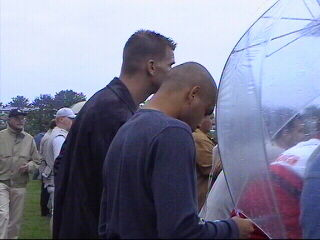
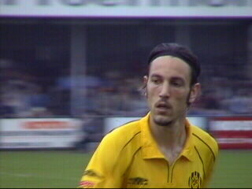
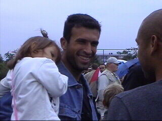
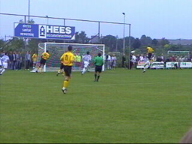
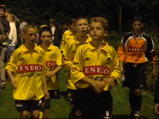
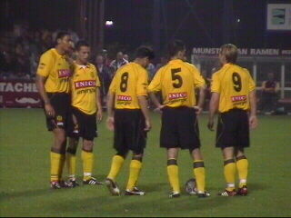
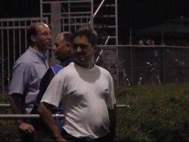
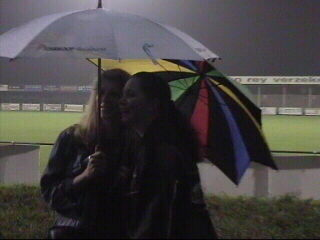
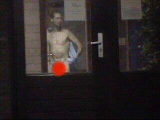
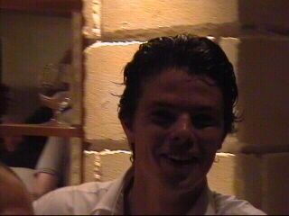

|
EVV - Roda JC (0-3) 20 augustus 2002 |

Omdat Roda al veilig was werd er een veredeld
tweede team opgesteld. Hier zien we Marc en
Cristiano langs de lijn.

Vicelich speelde zijn eerste wedstrijd sinds de
tragische familie-omstandigheden.

Ioannis met dochtertje.

Sonko torent hoog boven iedereen uit en opent
de score via een prachtige kopbal (13).

De Rodajeugd.

Berglund en Filipovic waren de enige basisspelers
die meededen. Maar misschien moet Vicelich ook
genoemd worden. En Nygaard??? En Sonko!!!!!!!

EVV-supporter en top-sponsor van de plaatselijke
kantine.

Deze dames hebben duidelijk dikke pret!
Deze dames hebben duidelijk dikke pret!
Waar kijken zij toch naar ???

Aha, de tattoo van Gerrie.

Tot slot een plaatje van de sympathieke EVV'er
Dominique Vergoossen, een neefje van Sef.
De wedstrijd eindigde in een 0-3 overwinning voor
Roda. Brouwers en Sonko scoorden in resp. de
20e en 22e minuut. Roda is poulewinnaar in hun
groep, voorronde Amstelcup.